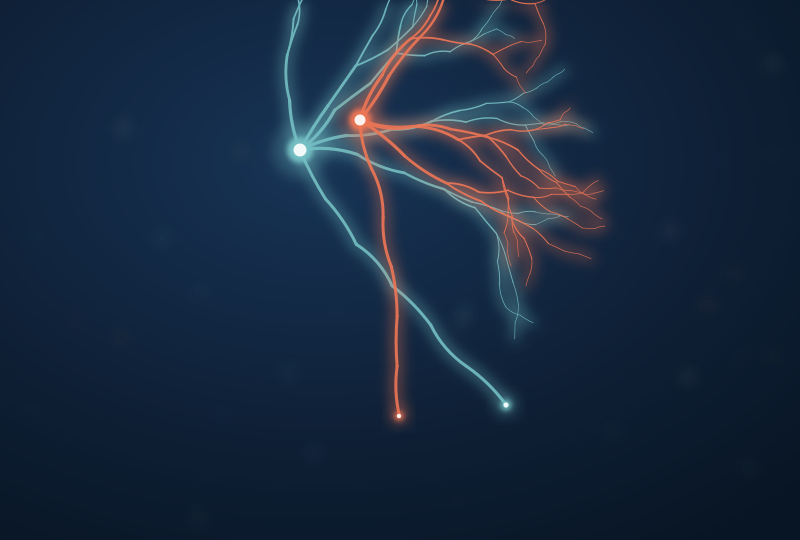

01
Descending neurons
The link between brain and body
Descending neurons are the small set of cells that carry signals from the brain into the nerve cord, where the circuits that actually move the body live. During my PhD I helped identify one of them, the Mooncrawler Descending Neuron: switch it on and a forward-crawling larva stops, reverses, and backs up, turning on backward movement and shutting off forward movement at the same time. At Bucknell we use flies to ask how neurons like this pick one action over another, and how that switch is built into the circuit.
